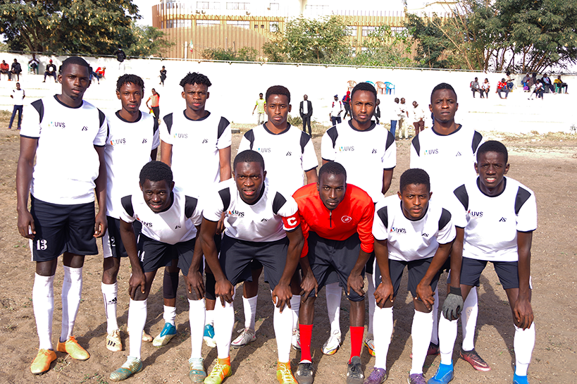

Rappel à Dieu de M. Cheikh Hamidou KANE, parrain de l'UN-CHK
4 octobre 2026L’Université numérique Cheikh Hamidou Kane (UN-CHK) a appris avec une profonde affliction le rappel à Dieu de son illustre parrain, Monsieur Cheikh Hamidou...
Lire la suiteL’Université numérique Cheikh Hamidou Kane (UN-CHK) a appris avec une profonde affliction le rappel à Dieu de son illustre parrain, Monsieur Cheikh Hamidou...
Lire la suiteLe Professeur Samuel OUYA, Recteur de l’Université numérique Cheikh Hamidou Kane (UN-CHK), a été nommé à la présidence de la Commission « Innovations...
Lire la suiteNos étudiants créent une communauté dynamique et inclusive
